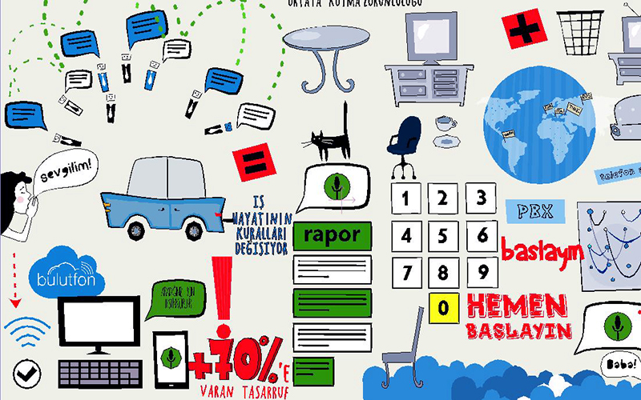
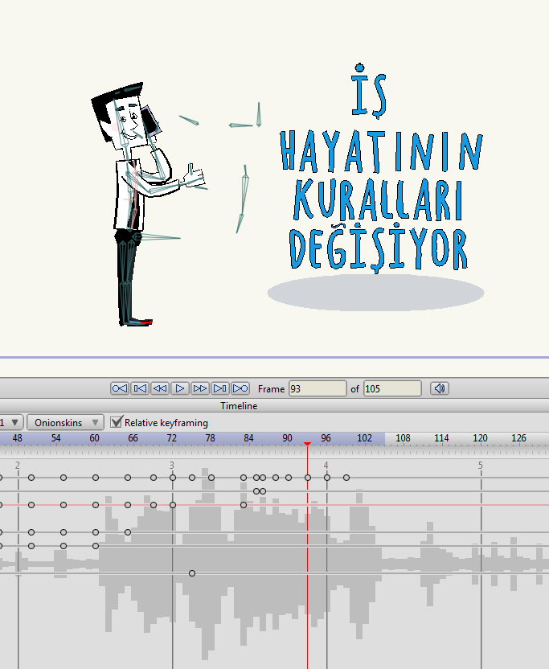

Bulutfon animasyonunu nasıl hazırladık
Bu makalede, animasyon oluşturma ile ilgili kısaca bilgi vermeye çalışacağım.
- adım, bir hikaye oluşturulması…
- adım, bir ana karakter oluşturulması…
- adım, bir hikaye panosu oluşturulması…
- adım, ana karakterin bir kukla olarak, iskeletiyle birlikte animasyon programında oluşturulması…
- adım, animasyon için gerekli olan tüm nesnelerin oluşturulması…
- adım, bir animasyon oluşturulması…
- adım, ses efektlerinin oluşturulması…
- adım, arka plan müziğinin oluşturulması…
- adım, birleştirme işlemlerinin uygulanması…
1. adım, bir hikaye oluşturulması…
Bu hikaye bize; Bulutfon ürünlerini anlatıyor; iş kurmayı kolaylaştırmak için Bulutfon‘un müşterilere sunduğu fırsatları, sağladığı rahat kullanımlı servisleri açıklıyor.
2. adım, bir ana karakter oluşturulması…
Hikayeyi oluşturduktan sonraki önemli adım, bir ana karakter oluşturmaktır. Bu karakteri; aklımızda çok samimi, zeki, enerjik, hoş gülümseyişe ve nazik gözlere sahip genç bir işadamına ihtiyacımız olduğu fikri ile oluşturduk. İnsan ölçülerine uygun olarak gerçeğe çok yakın bir şekilde hazırladık.
3. adım, bir hikaye panosu oluşturulması…
Hikaye ve ana karakter hazır olduktan sonra, bir sonraki çok önemli olan hikaye panosu oluşturma adımına geldik. Hikaye panosunu çok fazla detay olmadan oluşturduk, sadece hikayenin her cümlesindeki ana fikri ekledik. İnsanların ürünümüzü ve ürünümüzün amacını anlamalarını sağlamak için her bir sahneyi kısa animasyonlu açıklama şeklinde hazırladık. Kenar boşluklarına birçok not (karakterimizin nereden nereye hareket ettiğini gösteren oklar ve her bir sahneye, sahnedeki fikri kaybetmemek için bize yardımcı olması amacıyla birçok yorum) ekledik. Sonuç bu:

4. adım, Ana karakterin bir kukla olarak, iskeletiyle birlikte animasyon programında oluşturulması…
Tüm düzeltmeler yapılıp hikaye panosu tam olarak hazır olduğunda, sonraki adıma, karakterin kuklaya dönüştürülmesine geçtik. İş adamımıza animasyon ekleyebilmek için, onu ihtiyaç duyabileceğimiz iskelet ve tüm fonksiyonlar ile birlikte oluşturduk. Örneğin; konuşması, göz kırpması ve gözlerinin ifadesini normalden şaşırmışa veya normalden mutsuza değiştirebilmesini sağlamak için çok tipte ağız ve göz çizdik. Aynı zamanda çizgi karakter olduğundan ezilebilir ve uzayabilir; ayaklarını ve ellerini, kafasını, kaşlarını oynatabilir; hatta kravatına bile animasyon eklenebilir.

5. adım, Animasyon için gerekli olan tüm nesnelerin oluşturulması…
Animasyonda kullanacağımız bütün öğeleri oluşturduk. Bazı öğelere animasyon ekleyeceğimizden onlar için de ayrıca iskelet oluşturduk. Ana renkleri; çok yumuşak gri ile karıştırılmış sarı, yeşil, mavi ve kırmızı gibi çok açık renkler olarak seçtik.

6. adım, bir animasyon oluşturulması…
En önemli adım, iskeleti değiştirerek karakterlerin hareket etmesini sağlamaktır. Karakterleri plastik, komik, çok hayat dolu ve çok güzel yapmaya çalıştık. Animasyonu daha gerçekçi yapmak için, Walt Disney'in geliştirdiği kuralları kullandık. Animasyon yapmanın temel prensipleri ile ilgili kısa bir video buradadır:
Animasyon oluşturmanın ana prensipleri
Her bir sahneyi işledik ve bir klasör içine ayrı bir dosya olarak kaydettik.

Sonuç olarak aldığımız bu:

7. adım, ses efektlerinin oluşturulması…
Animasyonda bir çok ses efekti kullandık. Bu çok gerekli. Hareketlerdeki vurguyu öne çıkarır, düşen bir nesneye ağırlık verir, yürüyen bir adama ağırlık verir vs.

8. adım, arka plan müziğinin oluşturulması…
Arka plan müziği, animasyona refakatçi gibidir. Tüm ruh hali arka plan muziğine dayanır. Animasyon ritmi ve müzik ritmi tüm sahnenin tamamlanmasını sağlamak için eş zamanlı olarak çalışmak zorundadır. Animasyonun ritmine ve ana karakterin doğasına uygun enerjik ve çok eğlenceli bir müzik seçtik. Bu sayede, tüm hepsi sistem olarak harika bir şekilde çalışmış oldu.
9. adım, birleştirme işlemlerinin uygulanması…
Arkaplan müziği elimizde olduğunda, tüm animasyon dosyalarını tamamlanmış olarak hazırladığımızda ve tüm ses efektleri tamamlandığında; yapmamız gereken sadece bir adım kalıyor, tüm dosyaları tek bir video dosyası olarak birleştirmek.

Şimdi; tamamlanmış tüm çalışmalardan sonra, final animasyonunu görebiliriz:
Bulutfon Animasyonunu nasıl oluşturduk?
…ve Dribbble'da paylaşılmıştır.
Bulutfon animasyonu için dribbble paylaşımı
İlginiz için teşekkür ederim.
comments powered by Disqus